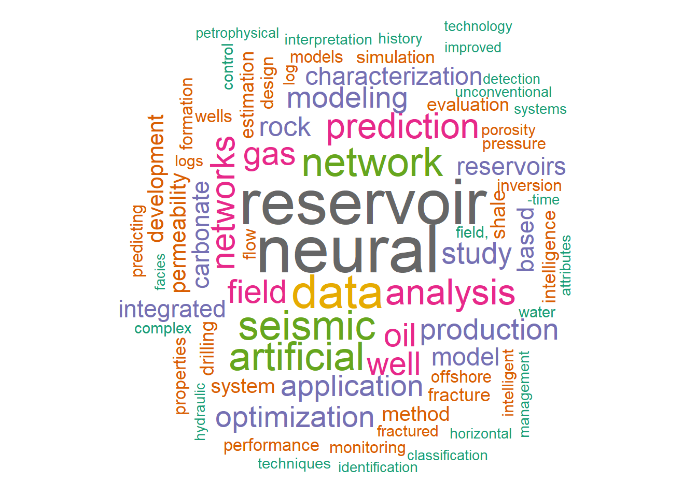

vignettes/make_wordcloud_02.Rmd
make_wordcloud_02.RmdIn the previous article we created our first word cloud. A word cloud help us to find quickly the focus of the document by means of the size of the words in the plot.
The problem we saw in the first word cloud is that we were seeing words of common use such as using, use, new, approach and case. These words will distract our attention of the technical orientation of the papers we are researching.
In this session, we will eliminate these common usage words with a customized dictionary or list of words.
library(petro.One)
library(tm)
library(tibble)
use_example(1)
p1 <- onepetro_page_to_dataframe("neural_network-s0000r1000.html")
p2 <- onepetro_page_to_dataframe("neural_network-s1000r1000.html")
p3 <- onepetro_page_to_dataframe("neural_network-s2000r1000.html")
p4 <- onepetro_page_to_dataframe("neural_network-s3000r1000.html")
nn_papers <- rbind(p1, p2, p3, p4)
nn_papers## # A tibble: 3,788 x 6
## book_title paper_id dc_type authors year source
## <fct> <fct> <fct> <chr> <int> <fct>
## 1 Neural Networks An~ SEG-2002-~ conferen~ Russell, Brian, H~ 2002 SEG
## 2 Deconvolution Usin~ SEG-1996-~ conferen~ Essenreiter, Robe~ 1996 SEG
## 3 Neural Network Sta~ SEG-1992-~ conferen~ Schmidt, Jumndyr,~ 1992 SEG
## 4 Hydrocarbon Predic~ SEG-2000-~ conferen~ Xiangjun, Zhang, ~ 2000 SEG
## 5 Higher-Order Neura~ SPE-27905~ conferen~ Kumoluyi, A.O., I~ 1994 SPE
## 6 Implicit Approxima~ SPE-11430~ journal-~ Li, Dao-lun, Univ~ 2009 SPE
## 7 Multiple Attenuati~ SEG-2000-~ conferen~ Karrenbach, M., U~ 2000 SEG
## 8 Conductive fractur~ ARMA-95-0~ conferen~ Thomas, Andrew L.~ 1995 ARMA
## 9 Neural networks ap~ SEG-2017-~ conferen~ Canning, Anat, Pa~ 2017 SEG
## 10 Artificial Neural ~ SPE-17127~ conferen~ Lind, Yuliya B., ~ 2014 SPE
## # ... with 3,778 more rowsNote that here we are removing some elemental common words, the ones supplied by the a text mining package called tm. This is the same function we used in the previous session. It does not eliminate words like using, use, etc.
We can take a look at what words to stop if we see the dataframe tdm.df in the previous article. Here are some:
tdm <- TermDocumentMatrix(vdocs)
tdm.matrix <- as.matrix(tdm)
tdm.rs <- sort(rowSums(tdm.matrix), decreasing=TRUE)
tdm.df <- data.frame(word = names(tdm.rs), freq = tdm.rs, stringsAsFactors = FALSE)
as.tibble(tdm.df) # prevent long printing of dataframe## Warning: `as.tibble()` is deprecated, use `as_tibble()` (but mind the new semantics).
## This warning is displayed once per session.## # A tibble: 5,823 x 2
## word freq
## <chr> <dbl>
## 1 neural 642
## 2 reservoir 564
## 3 data 473
## 4 artificial 368
## 5 seismic 363
## 6 network 356
## 7 analysis 325
## 8 prediction 321
## 9 networks 295
## 10 oil 283
## # ... with 5,813 more rowsYou see now that using is not at the top of the table as it was before. Let’s plot the wordcloud.
library(wordcloud)
set.seed(1234)
wordcloud(words = tdm.df$word, freq = tdm.df$freq, min.freq = 50,
max.words=200, random.order=FALSE, rot.per=0.35,
colors=brewer.pal(8, "Dark2"))
Now the wordcloud looks more technical oriented. Words of common use have been removed. That bring us more clarity.
There are a couple of things that we will notice in this phase of the text mining: (1) words that have similar root (log, logs, network, networks, system vs systems, etc.); and (2) words that are similar but are separated differently by dashes (real time vs. real-time, 3D vs 3-D, etc.); and (3) words that are similar but have puctuation signs such as commas, dots, exclamation sign, etc. (-time, field,).
We will work on them inn the next articles.